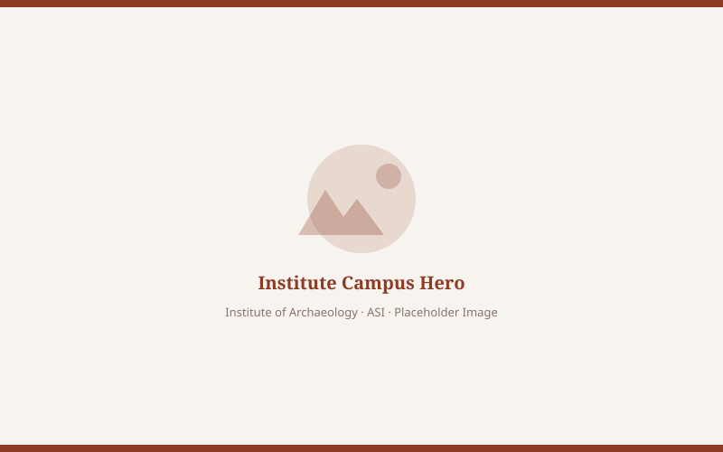

Archaeology
ArchaeologyArchaeology
Post Graduate Diploma in Archaeology
The Institute of Archaeology provides archaeological foundation in stratigraphic excavation, site survey, Wheeler-Kenyon methods, and GIS cartography.

The Institute of Archaeology (IoA), inaugurated by Hon’ble Prime Minister Shri Narendra Modi on 9th March 2019, is India’s foremost academic and research center for cultural heritage. Mandated to democratize archaeological studies, the Institute combines field archaeology with applied sciences to lead global research, preserve cultural artifacts, and deliver premier professional training in collaboration with universities, museums, and state heritage bodies.
Gallery dedicated to Pt. Deendayal Upadhyaya showcasing his life journey and his efforts for freedom of India.
Comprehensive wet and physical conservation labs for petrographic analysis, metallurgical dating, and structural chemical preservation.
Equipped with independent arterial access, state-of-the-art acoustic cladding, and simultaneous interpretation for international conferences.
Extensive repository of ASI excavation reports, rare epigraphic folios, Sanskrit and Persian palm-leaf treatises, and scholarly journals.
ArchaeologyThe Institute of Archaeology provides archaeological foundation in stratigraphic excavation, site survey, Wheeler-Kenyon methods, and GIS cartography.
 Conservation
ConservationOne month Induction Training Course is being conducted at Institute of Archaeology for newly recruited Senior Conservation Assistants and Conservation Assistants of Archaeological Survey of India.
ConservationUpcomingOne month Induction Training Course scheduled for newly recruited Senior Conservation Assistants and Conservation Assistants of Archaeological Survey of India.
Advanced stratigraphic excavation principles, Wheeler-Kenyon grid trenching, GIS mapping, and numismatic examination for diploma scholars.
Comprehensive pedagogical & field training on structural consolidation and stone preservation methodologies for newly elevated Senior Conservation Assistants.
Intensive field documentation, lime mortar analysis, and architectural elevation drawing modules for Conservation Assistants across ASI circles.
Organized cleanliness drive on the occasion of Mahatma Gandhi's birthday across institute premises, research halls, and heritage gardens.
Notice: Online application form will be operational during selection process. All prospective applicants must submit attested postgraduate transcripts in Ancient Indian History, Culture, Archaeology, or Sanskrit before the August cutoff date.
Registration
Online portal submission & dossier upload.
Written Exam
All-India entrance test in Greater Noida campus.
Orientation
Induction into 1 year PGDA program.
Postgraduate Diploma in Archaeology (PGDA)
Admission portal operates annually between October 15 and November 15. Ensure all academic dossiers are verified through DigiLocker.